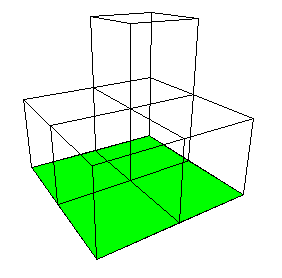

The first level consists of 5 cubes, each of side length
1/2
.
The
base
is a square with
A
1
= 1
and is part of all levels of the construction.
Whatever it is, the area of the limiting shape is at least 1.